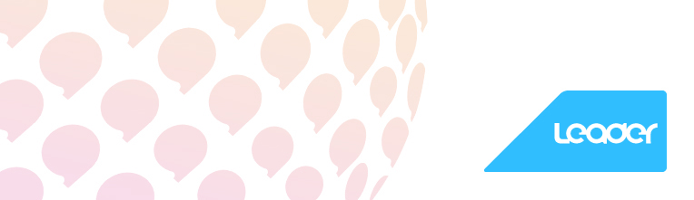

统帅进入统帅网站
统帅是海尔集团继海尔、卡萨帝之后的第三个子品牌，是海尔集团在互联网时代背景下推出的定制家电品牌。1998年，统帅品牌作为海外行销平台出口欧洲市场，2008年转入国内市场，并于2011年，以“定制家电”品牌定位全新亮相。
秉承“你设计，我制造；你需要，我送到”的品牌理念以及“只为需要的功能买单，为不需要的功能免单”的价值主张。统帅通过虚实融合模式，线上（互联网）快速获取用户个性化需求，线下快速满足用户需求。运用海尔的研发技术优势，同时依托海尔集团四网（虚网、营销网、物流网、服务网）优势，充分保证了产品生产、配送和整套服务的及时性和完善性。简捷的商务模式，独特的功能设计，是更符合互联网时代消费者需求的新品牌!
统帅产品涉及冰箱、洗衣机、热水器、空调、冷柜、彩电、厨电等八大品类。 统帅始终坚持以用户需求为本，旨在通过按需定制按需生产的方式快速满足互联网时代用户的个性化需求。在这里，用户才是产品的“设计者”。统帅品牌目标人群主要是倡导个性、时尚、简约生活方式的年轻消费群体。
品牌愿景：
与用户一起创造个性时尚的生活方式
品牌使命
你设计我制造 你需要 我送到
品牌个性
Fun(乐趣）、Fashionable（时尚）、Friendly（友好）
统帅历程：
2012年——统帅紧抓市场机遇，凭借实力及优势，产品全系列中标国家“节能产品 惠民工程”。
2011年——互联网时代，用户的需求更加个性化、碎片化，统帅与时俱进，确立新的品牌定位及品牌战略。
2010年——统帅成功中标国家家电下乡，深耕国内家电市场，大力拓展渠道，实现倍速发展。
2008年——国家家电下乡等多个利好政策出台，带来农村市场倍速发展，乐家电器及时调整策略，布局国内市场。
2002年——针对海外消费特点研发产品，主要销往美国、德国、意大利、法国等欧美主流市场。
2000年——青岛乐家电器有限公司集结美国、德国、意大利的设计师们在美国成立全球研发团队，针对海外发展需求研发简约家电。
1998年——1998年创立青岛乐家电器有限公司，并将品牌命名为统帅。
进入统帅网站